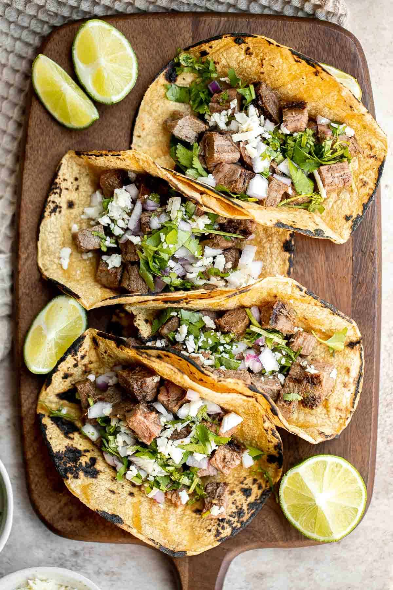

Steak Tacos

A taco is a traditional Mexican food consisting of a small hand-sized corn- or wheat-based tortilla topped with a filling. The tortilla is then folded around the filling and eaten by hand.
Ingredients
- Corn or flour tortillas
- steak
- salt
- pepper
- garlic
- onion
- tomatoes
- Chop up steak into bite size pieces then season generously with salt, pepper, and garlic.
- Cook the steak until its desired donedness.
- While the steak is cooking, finely chop a full tomato and onion.
- Once steak is done, let it rest and meanwhile heat up a flat pan.
- Once tortillas are ready place them flat on a plate and fill each with a spoonful of steak, then top with the chopped tomotoes and onion.
- Enjoy!
Return to home.